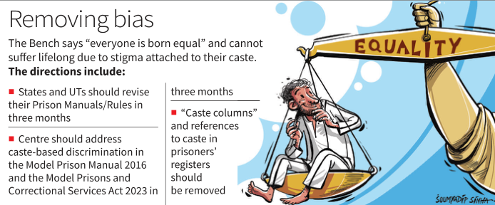
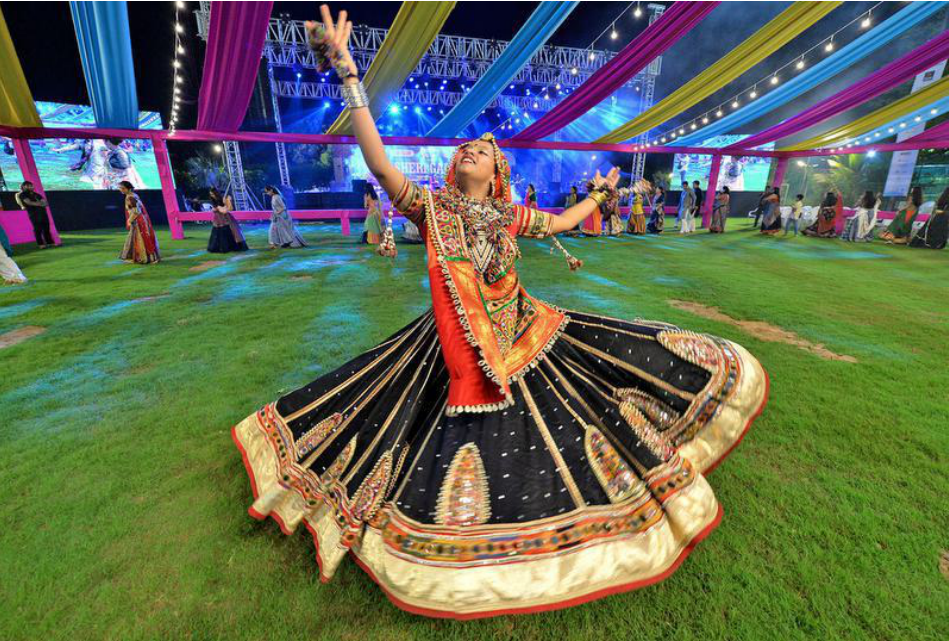
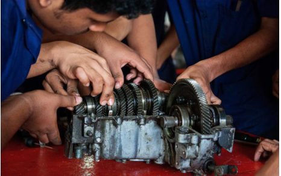

Chennai >> Coimbatore >> Bengaluru >> Hyderabad >> Madurai >> Noida >> Visakhapatnam >> Thiruvananthapuram >> Kochi >> Vijayawada >> Mangaluru >> >> Trichirapalli >> Kolkata >> Hubbali >> Mohali >> Malappuram >> Mumbai >> Tripati >> Lucknow >> Cuttack >> Patna
INSIDE
▼
SC restrains
police action at
Isha Foundation
NEW DELHI
The Supreme Court restrained
the Tamil Nadu Police from
taking "any further action"
against the Isha Foundation,a
non-profit organisation
founded by Jaggi Vasudev.The
Madras High Court had orderd
a probe into allegations raised
by a man in a habeas corpus
petition. >>PAGE 3
Bangladesh
recalls envoy
from India
NEW DELHI
The interim government of
Bangladesh this week
transferred Mostazur Rahman,
High Commissioner of
Bangladesh to india,back to
Dhaka.He is asked to return
to Dhaka without delay.
Bangladesh is yet to announce
his replacement. >> PAGE 4
Caste bias,segregation of work
in prisons violate dignity,says SC
Prison manuals must be revised within 3 months,rules Bench headed by CJI; it says distribution of work on basis of caste &nbamounts to untouchability; court adds it is the highest form of discrimination when state discriminates against a citizen
Krishnadas rajagopal
NEW DELHI
The Supreme Court on
Thursday declared that Caste
based discrimination of pris-
oners,segregation of their
work according to caste hie-
rarchy, and the treatment of
inmates from the de-notified
tribes as"habitual offenders"
within prison walls across
India are oppressive to
fundamental human dignity
and personality.

The top court directed the revision of prison ma- nuals within three months. It ordered the deletion of the 'caste column' and any references to caste from re- gisters of undertrials and convicts maintained in pri- sons. The court under- scored that members of de- notified tribes must not be
Reign of colours
Removing bias.
subjected to arbitrary
arrest.
"Everyone is born
equal. There cannot be any
stigma attached to the exis-
tence, touch or presence of
any person... More than 75
years since Independence,
we have not been able to
eradicate the evil of caste
discrimination," a three-
judge Bench headed by
Chief Justice of India D.Y.
Chandrachud observed.
The CJI, who authored
the judgment, referred to
Article 15(1) of the Constitu-
tion which enshrines the
fundamental right against
discrimination. "But if the
state itself discriminates
against a citizen, then it is
discrimination of the high-
est form. After all, the state
is expected to prevent dis-
crimination, not perpet-
uate it," he noted. He held
that discrimination among
prisoners and distribution
of work on the basis of
caste amounted to un-
touchability, which is for-
bidden under Article 17 of
the Constitution.
Prison manuals, by
treating members of the
denotified and wandering
tribes as "born criminals"
and habitual offenders, re-
affirmed colonial caste-
based discrimination. The court declared all loose re- ferences to 'habitual offenders' in prison manuals as
unconstitutional.
The judgment decl-
ared that compelling marginalised caste inmates to perform tasks like cleaning latrines or sweeping based purely on their caste, consti-tuted a form of coercion.
The court held that the Prohibition of Employment as Manual Scavengers and their Rehabilitation Act, 2013, which prohibit manual scavenging, has a binding effect in prisons as well.
The court directed the
Union government to
make the necessary changes to address caste-based discrimi-
nation in the 2016
Manual and the 2023 Act within three months.
'Marital ties must
be exempt from
rape provisions'
NEW DELHI
The Union government on
Thursday told the Supreme
Court that punishing
non-consensual sexual acts by
a man with his wife as rape will
impact conjugal relationship
and lead to "serious
disturbances" in the institution
of marriage. >> PAGE 6
U.K. to return
Chagos Islands
to Mauritius
NEW DELHI
The U.K. and Mauritius have
reached a historic political
agreement to secure the
strategically important
U.K.-U.S. military base
on Diego Garcia and
towards restoring Mauritian
sovereignty over the Chagos
archipelago. >> PAGE 14
Regin of colours

Festive spirit:A dancer performs garba on the first day of Navaratri at the sports club in,Ahmedabad,Gujarat,on Thursday.The nine day
festival began on Thursday and will go on till October 12.VIJAY SONAJI.
Campaign for
Haryana polls
ends; voting
tomorrow
Ashok Kumar GURUGRAM
Leaders of major political
parties in Haryana held a
series of rallies, road-
shows, and nukkad sabhas
(street-corner meetings)
across the State before
campaigning for the elec-
tion to the 90-member Ha-
ryana Assembly ended on
Thursday.
The state will vote on
Saturday.
A total of 1,031 candi-
dates, including 101 wo-
men, are in fray in the
high-stakes election, with
the Congress and the BJP
both contesting 89 seats
each.
FULL REPORT
» PAGE 5
Govt. opens portal
for internships to
bridge skill set gap

The process is expected to result in about one lakh youth joining
on-the-job training exercises by December 2. ISTOCKPHOTO
Vikas Dhoot
NEW DELHI
The Union government on Thursday opened up a por- tal for India's top 500 com- panies to participate in the internship
one-year scheme announced in this
year's Union Budget to bridge the gap between the skill sets of unemployable youth and those needed by employers.
As many as 111 corpo-
rates including the
Ma- hindra and Mahindra
group, Max Life Insurance,
and Alembic Pharma - had
hours of the portal's
launch, offering 1,077 in- ternships. This kicked off a process that is expected to result in about one lakh youngsters joining the on- the-job training exercise, officially called The Prime Minister's Internship Scheme in Top Compa-
nies, by December 2.
Top sources in the Mi-
nistry of Corporate Affairs,
which is steering the
scheme that aims at train-
ing one crore youth in five
years, said this is a pilot
project being undertaken
at a cost of ₹800 crore. The
lessons learnt from this
will help fine-tune the
scheme's design before the
Cabinet's approval is
sought for a full-fledged
rollout.
The portal, pmintern- ship.mca.gov.in, is likely to
be opened up for young-
sters in the age group of 21
to 24 years to enroll for consideration by compa-
nies on Vijaya Dasami, Oc-
tober 12. This window will be open till October 25 for the first batch of intern- ships.
Candidates' data will be matched with companies' needs and locations using artificial intelligence tools, and a shortlist of candi- dates will then be generat- ed for companies consider.
The scheme is not open
to post-graduates, children of regular and permanent employees in the Union or State governments, grad- uates from premier insti- tutes like IITs, IIMs and NIDs, and professionals with qualifications such as CA, CS, and MBBS. More- over, anyone from a house- hold that includes a person who earned an income of *8 lakh or more in 2023-24, will not be eligible.
Internships under the scheme will be granted to candidates who have
passed high school or high- er secondary school, pos- sess a certificate from an industrial training institute (ITI), hold a diploma from a polytechnic institute, or are graduates with degrees such as BA, B.Sc, B.Com, BCA, BBA, or B.Pharma. Unemployed youth en- rolled in online or distance learning courses are also eligible to apply, but anyone undergoing any skilling, apprenticeship, in- ternship, or student train- ing programme under a Union or State government scheme will not be allowed to apply.